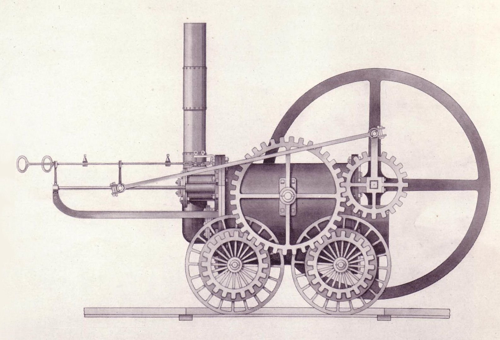

1. Blokea: Iraultzaren testuingurua

James Watten lurrun-makina.
Industria Iraultzak diseinu grafikoa erabat eraldatu zuen, antzinako ekoizpen sistemak zaharkituta utziz. Aldaketaren motorra James Watt izan zen; hark lurrun-makinari egindako hobekuntzak, bereziki 1769ko kondentsadore independentea, izan ziren prozesu honen ardatza. Asmakizun horri esker, lantegiek energia merkeagoa eta indartsuagoa lortu zuten, ekoizpen masiboa ahalbidetuz. Honek guztiak merkatuaren lehia sustatu zuen: produktuak pilatu egiten ziren eta fabrikatzaileek eurenak besteengandik bereizi behar zituzten. Premia horretatik jaio ziren gaur egun ezagutzen ditugun iragarki ikusgarriak, kartel deigarriak eta produktuak babesteko zein saltzeko ontzi edo packaging espezifikoak.
Gizartean eragina itzela izan zen. Hirien hazkundeak klase ertain berri bat sortu zuen eta herritarren alfabetatze mailak gora egin zuen nabarmen. Ondorioz, egunkari, aldizkari eta liburuekiko eskaera izugarri areagotu zen. Informazioa ez zen jada gutxi batzuen kontua, denon eskura zegoen zerbait baizik. Testuinguru horretan, publizitatea eguneroko bizitzan sartu zen; jendeak kontsumo behar berriak zituen eta komunikazio bisualak (kartelak, liburuxkak) behar horiek asetzen laguntzen zuen. Kartelak, adibidez, mezu azkarrak emateko tresna bihurtu ziren, testu luzeak baztertuz eta tipografia handi eta lodiak erabiliz, jendeak kalean zihoala informazioa begiratu batean jaso zezan.
Diseinuaren hausturari dagokionez, fabrika-sistemak artisautza eredua suntsitu zuen. Lehen, artisauak objektu bat hasieratik amaierara pentsatu eta eskuz egiten zuen, prozesu osoaren jabe zelarik. Industriak, ordea, diseinatzailea eta ekoizlea bereizi zituen. Pertsona batek (diseinatzaileak) proiektua marrazten edo pentsatzen zuen, eta beste batek (makinak edo langileak) seriean ekoizten zuen, emaitza estetikoan ezer erabaki gabe. Banaketa horrek diseinu modernoaren sorrera markatu zuen: sorkuntza intelektuala eta fabrikazio fisikoa bi mundu independente bihurtu ziren. Honek hasieran kalitate galera ekarri bazuen ere, komunikazio bisualaren lanbideari bidea ireki zion, forma eta funtzioaren arteko oreka berria bilatzea bihurtuz erronka nagusia.